Response of Matter¶
Maxwell’s Equations and Transfer of Momentum and Energy

Energy and Momentum¶
Energy transfer can be described through Poynting vector which in the simplist plane wave case is basically 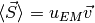 where  is the energy density. Obviously Poynting vector is the energy transfer rate.
is the energy density. Obviously Poynting vector is the energy transfer rate.
Momentum density is 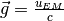 in the same plane wave.
Let’s start from conservation of charge. Taking the divergence of the following equation,
I get the conservation law,
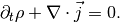
On the next step we find energy density of the wave. The starting point is the interaction of charge and electric field, e.g.,  , 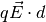.
, 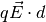.
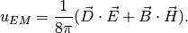
Upon this we can find 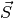 which is
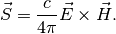
As for momentum, we have

where

Response of Matter¶
The equation for monochromatic wave,
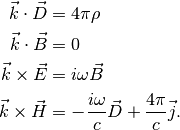
In the case of  (no free charge) and 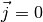 no free current,
(no free charge) and 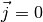 no free current,

The important relation is dispersion relation which is the relation between wave number and frequency. In this context,

which reduces to
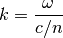
as now we can define a new velocity which stands for the phase velocity by
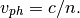
Impedance¶
Since  corresponds to the magnetic part
corresponds to the magnetic part  , we would like to rewrite one of the equation to
, we would like to rewrite one of the equation to

where

If  , we have
, we have
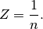
Matching Condition¶
Matching conditions are not just something written down on the textbook. They all have meanings.
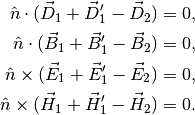
In order to satisfy these matching conditions, the phase of all fields should be the same. Thus leading to the Snell’s law

The parallel parts of the fields give us the other relation,

Reflected and Transmitted Wave¶
Recall that impedance is  which leads to or corresponds to
which leads to or corresponds to
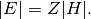
Impedance shows the scaling between the magnetic field and the electric field. In fact for monochromatic TEM,
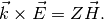
Then we derive the ratios,
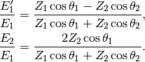
By definition, impedance becomes  when . In this limit,
when . In this limit,

Now what I need to be careful is that in this derivation, I used the geometry to project the fields on to the surface where the polarization of the wave matters. For the result above, they are only valid for waves with polarization parallel to the surface.
Using similar tricks, I can write down the result for waves with polarization perpendicular to surface. The matching conditions are
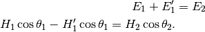
This can be abtained by just draw a graph of the incident wave, reflected wave and refracted wave.
Solving the equations
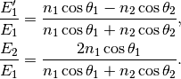
Reflection, Refraction, Transparent, Dissipative¶
Reflection coefficient and transmission coefficient find the energy reflected and transmitted.

For normal incident, these becomes easier to calculate because all thetas becomes 0. The result is
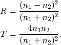
Evanescent wave is the case when the wave vector becomes imaginary and the wave tenuates to 0 quickly. In the situation of total reflection, the transmitted wave can be calculated. To find out the evanescent wave one need to calculate the condition for total reflection then plug in the condition for a assumed wave in medium 2.
Evanescent wave doesn’t mean energy lose in reflection, it only proves that wave can not go deep into the material and all waves are reflected. The material does NOT nessarily obsorbe all the energy of the wave. One can show that in total reflection, energy flowing in all flows out, i.e.,
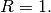
The question is, what is dissipative material? They are those with complex wave vectors such that wave dissipates as they passing through the bulk material.
Ohmic Matter¶
A term of current
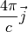
is added to the equations so that it describes matter which supports current.
Ohm’s law shows the relations between current and field,

By plug in this to the Maxwell’s equations, we can have a new permitivity. For monochromatic wave,
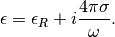
Using dispersion relation derived, we can define the complex refractive index.
Given the dispersion relation we could also find the waves and calculate Poynting vector
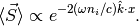
This is our anticipation since the wave vector has a length of  due to dispersion relation 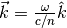. Plug this into the expression for plane wave, we have the spatial part proportional to
due to dispersion relation 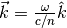. Plug this into the expression for plane wave, we have the spatial part proportional to

We can directly see the damping part. This is how one finds the skin depth which means the Poynting vector drops to 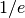 of that of the incident wave,
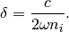
If the imaginary part becomes very large, i.e.,
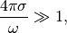
the atenuation becomes significant or both real part and imaginary part of refractive index becomes much larger than 1. This is equivalent to good conductor. We can see the skin depth

Refrective index also becomes 1.
Remember surface current is defined as
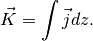
We could use this to find a effective surface current. Current density is

Using dispersion relation, and suppose we have wave vector in z direction. We can write down the incident wave
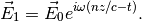
Fresnel’s relation tells us the refracted wave, which is
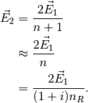
The last step is true for good conductor. The current density is therefore clear so is the surface current.
In summary, good conductor has a
- small skin depth;
- large n for both real and imaginary part;
- almost 1 as the reflection coefficient.
Dispersive Media¶
Dispersive media can be modeled using Drude model, Lorentz model and many other. Read Drude Model and Lorentz Model in vocabulary part.
By definition, group velocity is the result of dispersion relation,
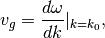
while phase velocity is always 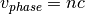 where n can be larger than 1.
Read chapte 5 of Kevin Cahill’s book for knowledge of complex dispersion relation and more. Notice that both group velocity and phase velocity can be larger than the vacuum speed of light.
{kind=link}